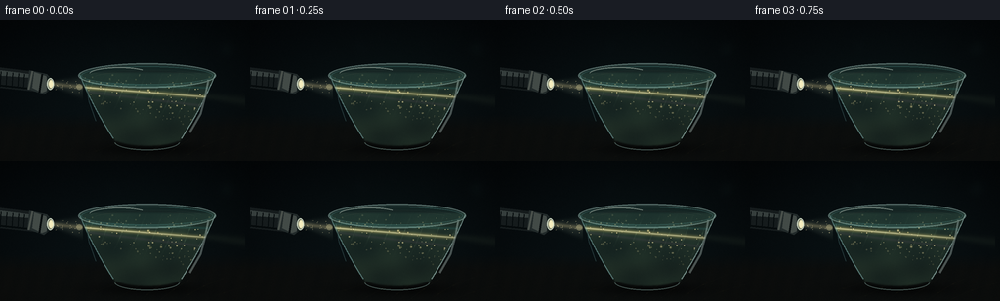
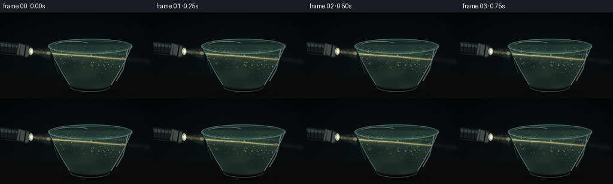
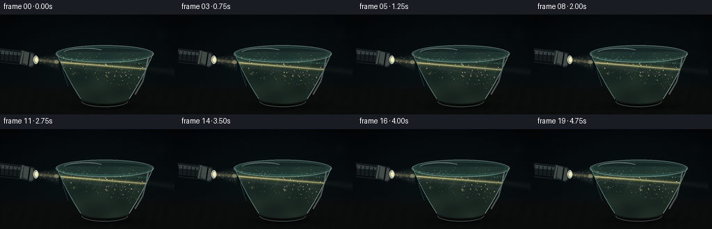
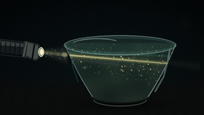
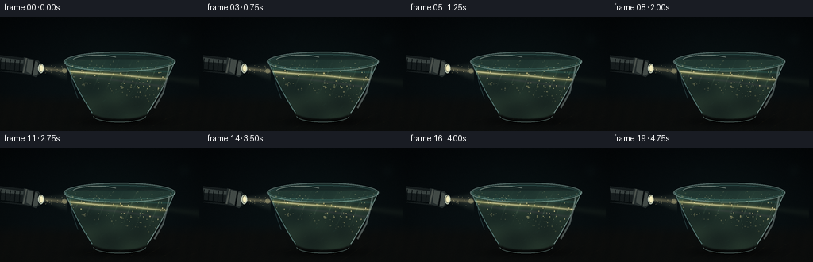

CODING AGENTS AS PIXEL WORLD MODELS
traex/GPT-5.6-Sol · phygen_047
点击播放 · 原生 RGB 像素
逐轮保存的候选
回放视频、检查图与代码变化。
每份候选均可单独播放。实际图片检查记录在下方工具轨迹中。
候选 01播放与检查图
点击播放 · 原生 RGB 像素


展开代码变化
--- 上一保存版本
+++ 本次保存版本
@@ -0,0 +1,265 @@
+from pathlib import Path
+import math
+import numpy as np
+from PIL import Image, ImageDraw, ImageFilter
+from scipy.ndimage import gaussian_filter
+import artifact_io
+
+# Deterministic, fully procedural 2-D volumetric illustration.
+W, H, N = 256, 144, 20
+S = 3
+w, h = W*S, H*S
+xx = (np.arange(w) + 0.5) / S
+yy = (np.arange(h) + 0.5) / S
+X, Y = np.meshgrid(xx, yy)
+rng = np.random.default_rng(4701)
+
+
+def over(base, color, alpha):
+ """Alpha composite a constant or RGB field over base, all float in [0,1]."""
+ a = np.clip(alpha, 0, 1)[..., None]
+ c = np.asarray(color, dtype=np.float32)
+ if c.ndim == 1:
+ c = c[None, None, :]
+ return base * (1-a) + c * a
+
+
+def layer_from_pil(im):
+ a = np.asarray(im, dtype=np.float32) / 255.0
+ return a[..., :3], a[..., 3]
+
+
+def composite_pil(base, im):
+ c, a = layer_from_pil(im)
+ return over(base, c, a)
+
+
+def P(points):
+ return [(int(x*S), int(y*S)) for x, y in points]
+
+# Bowl profile mask, constructed analytically for stable subpixel edges.
+cx = 151.0
+t = np.clip((Y-55.0)/69.0, 0, 1)
+radius = 69.5 - 27.0*t - 9.5*t*t
+body = (Y >= 54) & (Y <= 124) & (np.abs(X-cx) <= radius)
+# Rounded foot/bottom cap.
+body |= (((X-cx)/33.2)**2 + ((Y-120.8)/7.8)**2 <= 1) & (Y >= 119)
+# soften bowl silhouette only slightly at the supersampled scale
+body_a = gaussian_filter(body.astype(np.float32), 0.75*S)
+
+# Background: dark cyan-black studio, slightly warmer close to the table.
+yn = Y/H
+base = np.empty((h, w, 3), np.float32)
+base[..., 0] = 0.018 + 0.020*yn
+base[..., 1] = 0.035 + 0.035*yn
+base[..., 2] = 0.044 + 0.037*yn
+# Low-key glow behind bowl.
+ambient = np.exp(-(((X-148)/104)**2 + ((Y-64)/68)**2)*1.7)
+base = over(base, [0.035, 0.085, 0.082], .28*ambient)
+# Vignette.
+vig = np.clip(1 - .34*((X-128)/138)**2 - .33*((Y-72)/90)**2, .55, 1)
+base *= vig[..., None]
+
+# Defocused background glints, kept subtle.
+bg = Image.new('RGBA', (w,h), (0,0,0,0)); d = ImageDraw.Draw(bg, 'RGBA')
+for bx, by, br, col in [(232,29,9,(70,126,119,11)), (198,20,4,(151,164,119,10)),
+ (113,27,6,(71,127,130,8)), (67,18,3,(190,156,91,8))]:
+ d.ellipse((int((bx-br)*S),int((by-br)*S),int((bx+br)*S),int((by+br)*S)), fill=col)
+bg = bg.filter(ImageFilter.GaussianBlur(5*S))
+base = composite_pil(base, bg)
+
+# Table plane and faint wood texture.
+table = np.clip((Y-96)/15, 0, 1)
+base = over(base, [0.043,0.046,0.041], .77*table)
+wood = .5 + .5*np.sin(.34*X + 1.7*np.sin(.028*X) + .09*Y)
+wood *= np.exp(-((Y-123)/28)**2)
+base = over(base, [0.13,0.105,0.069], .045*wood*(Y>98))
+# Bowl shadow.
+shadow = np.exp(-(((X-153)/69)**2 + ((Y-132)/8.5)**2)*2.0)
+base *= (1-.56*shadow[...,None])
+
+# Static flashlight and bowl-independent atmosphere are rendered each frame later.
+# Particle coordinates in the fluid, weighted to remain inside profile.
+px, py, pr, phase = [], [], [], []
+while len(px) < 185:
+ yy0 = rng.uniform(56,119)
+ tt = (yy0-55)/69
+ rr = 69.5-27*tt-9.5*tt*tt
+ xx0 = rng.uniform(cx-rr+2, cx+rr-2)
+ px.append(xx0); py.append(yy0); pr.append(rng.uniform(.16,.66)); phase.append(rng.uniform(0,2*np.pi))
+px=np.array(px); py=np.array(py); pr=np.array(pr); phase=np.array(phase)
+# Larger recognizable flecks.
+large_idx = rng.choice(len(px), 32, replace=False)
+# Airborne specks within the short free-space cone.
+airx=rng.uniform(54,82,22); airy=rng.uniform(61,75,22); airp=rng.uniform(0,2*np.pi,22)
+
+frames=[]
+for fi in range(N):
+ time = fi / 4.0
+ theta = 2*np.pi*fi/N
+ img = base.copy()
+
+ # Animated projected caustics on the tabletop beneath and to the right of bowl.
+ caust_mask = (Y>111) * np.exp(-((Y-130)/11)**2) * np.exp(-((X-168)/69)**2)
+ q1 = np.exp(-(np.sin(.105*X + .21*Y + .72*time + 1.3*np.sin(.038*X-time*.22))/.105)**2)
+ q2 = np.exp(-(np.sin(.075*X - .27*Y - .53*time + .9*np.sin(.051*Y))/.13)**2)
+ caust = caust_mask * np.clip(.56*q1*q2 + .16*q1,0,1)
+ img = over(img, [0.62,0.52,0.25], .16*caust)
+
+ # Flashlight beam in air: broad cone halo plus a concentrated core.
+ sweep = 0.65*math.sin(theta)
+ c_air = 65.1 + .105*(X-52) + sweep*(X-52)/30
+ half_air = 3.0 + .235*np.clip(X-52,0,None)
+ cone_region = (X>=48)&(X<=85)
+ cone = np.exp(-((Y-c_air)/(half_air+1e-3))**4) * cone_region
+ cone *= (.90 + .10*np.sin(.31*X+.13*Y))
+ img = over(img, [0.75,0.86,0.74], .105*cone)
+ aircore = np.exp(-((Y-c_air)/2.15)**2)*cone_region
+ img = over(img, [1.0,.91,.64], .24*aircore)
+
+ # Bowl glass body: subtle transparent volume before adding murky liquid.
+ img = over(img, [0.17,0.29,0.28], .12*body_a)
+
+ # Murky water base with coherent suspended density variations.
+ cloud = (0.50 + .17*np.sin(.074*X+.103*Y+.24*time)
+ + .14*np.sin(.129*X-.066*Y-.16*time+1.8)
+ + .10*np.sin(.036*X+.21*Y+.11*time))
+ cloud = np.clip(cloud,0,1)
+ water_alpha = body_a * (.54 + .19*cloud)
+ water_color = np.zeros_like(img)
+ water_color[...,0] = .105 + .055*cloud
+ water_color[...,1] = .165 + .065*cloud
+ water_color[...,2] = .145 + .035*cloud
+ img = over(img, water_color, water_alpha)
+
+ # Beam refracts slightly downwards upon entering the water. Turbidity creates
+ # a wide soft volume and a bright, still concentrated central ray.
+ center = 68.35 + (.079 + .005*math.sin(theta*.7))*(X-82) + sweep
+ width = 5.6 + .060*np.clip(X-82,0,None)
+ inside = body_a * (X>=78)
+ halo = np.exp(-((Y-center)/(width+1e-3))**2) * inside
+ # granular extinction/scattering pattern travels slowly rather than flickering
+ scatter = (.72 + .16*np.sin(.33*X+.21*Y+.48*time)
+ + .10*np.sin(.11*X-.39*Y-.28*time))
+ longitudinal = .96 - .0023*np.clip(X-82,0,None)
+ img = over(img, [.55,.74,.55], .15*halo*scatter*longitudinal)
+ core = np.exp(-((Y-center)/2.05)**2) * inside
+ img = over(img, [1.0,.88,.47], .42*core*longitudinal)
+ hot = np.exp(-((Y-center)/.68)**2) * inside
+ img = over(img, [1.0,.985,.80], .63*hot*longitudinal)
+
+ # Fine wavy caustic filaments within the water, especially around the beam.
+ # Ridges are intersections of several moving refractive wave fields.
+ wa = np.sin(.185*X + .115*Y + .62*time + .9*np.sin(.045*Y-.17*time))
+ wb = np.sin(.108*X - .247*Y - .43*time + .65*np.sin(.052*X))
+ ridges = np.exp(-(wa/.105)**2) * (.35 + .65*np.exp(-(wb/.27)**2))
+ filament_zone = inside*np.exp(-((Y-center)/(width*1.55))**2)
+ img = over(img, [.76,.94,.69], .18*ridges*filament_zone)
+ # faint violet/cyan edge dispersion around ray
+ upper = np.exp(-((Y-(center-width*.70))/1.2)**2)*inside
+ lower = np.exp(-((Y-(center+width*.72))/1.4)**2)*inside
+ img = over(img, [.24,.78,.79], .12*upper)
+ img = over(img, [.68,.42,.62], .075*lower)
+
+ # Illuminated suspended particles: coherent slow drift and parallax.
+ pl = Image.new('RGBA',(w,h),(0,0,0,0)); pd=ImageDraw.Draw(pl,'RGBA')
+ for j in range(len(px)):
+ xj = px[j] + .42*math.sin(.52*time+phase[j])
+ yj = py[j] - ((.19+.08*math.sin(phase[j]))*time) + .30*math.sin(.7*time+phase[j]*1.7)
+ # loop imperceptibly if a mote reaches top
+ if yj < 55: yj += 63
+ cj = 68.35 + .079*(xj-82) + sweep
+ wd = 6.1 + .06*max(xj-82,0)
+ illumination = math.exp(-((yj-cj)/(wd*1.42))**2)
+ if illumination < .055: continue
+ rr = pr[j]*(1.0 + .14*math.sin(time+phase[j]))
+ glow = int(30 + 155*illumination)
+ if j in large_idx:
+ rg=max(0.8, rr*2.1)
+ pd.ellipse((int((xj-rg)*S),int((yj-rg)*S),int((xj+rg)*S),int((yj+rg)*S)),
+ fill=(236,221,135,int(24+42*illumination)))
+ pd.ellipse((int((xj-rr)*S),int((yj-rr)*S),int((xj+rr)*S),int((yj+rr)*S)),
+ fill=(255,238,170,glow))
+ # softly glow particles while retaining sharp pinpoints
+ glow_layer=pl.filter(ImageFilter.GaussianBlur(1.15*S))
+ img=composite_pil(img,glow_layer)
+ img=composite_pil(img,pl)
+
+ # Top water surface: murky elliptical meniscus with animated rings.
+ surf=Image.new('RGBA',(w,h),(0,0,0,0)); sd=ImageDraw.Draw(surf,'RGBA')
+ sd.ellipse((81*S,45*S,220*S,68*S), fill=(38,67,61,112), outline=(139,184,171,72), width=1*S)
+ # highlight on meniscus shifts gently with ripples
+ for k in range(3):
+ off=1.15*math.sin(.72*time+k*1.8)
+ box=((92+k*5)*S,(51+off+k*.8)*S,(208-k*7)*S,(62+off-k*.1)*S)
+ sd.arc(tuple(map(int,box)), 188, 344, fill=(158,197,174,42-k*8), width=max(1,S//2))
+ # Entry sparkle at water/glass wall
+ sd.ellipse((78*S,(65+sweep)*S,84*S,(71+sweep)*S), fill=(255,242,178,75))
+ img=composite_pil(img,surf)
+
+ # A little beam exits the far wall, strongly attenuated.
+ cexit=78.3 + .13*(X-216)+sweep
+ exitmask=((X>211)&(X<251))*np.exp(-((Y-cexit)/(3.3+.05*(X-216)))**2)
+ img=over(img,[.58,.70,.49],.055*exitmask)
+
+ # Glass contours and realistic specular arcs.
+ gl=Image.new('RGBA',(w,h),(0,0,0,0)); gd=ImageDraw.Draw(gl,'RGBA')
+ # full doubled rim
+ gd.ellipse((80*S,44*S,221*S,69*S), outline=(184,224,214,112), width=1*S)
+ gd.ellipse((83*S,47*S,218*S,66*S), outline=(77,133,127,86), width=1*S)
+ # side profiles sampled as anti-aliased polylines
+ left=[]; right=[]
+ for yi in np.linspace(56,121,80):
+ tt=(yi-55)/69; rr=69.5-27*tt-9.5*tt*tt
+ left.append((cx-rr,yi)); right.append((cx+rr,yi))
+ gd.line(P(left), fill=(152,211,206,118), width=1*S)
+ gd.line(P(right), fill=(186,224,216,137), width=1*S)
+ gd.arc((117*S,116*S,184*S,133*S), 5,175, fill=(172,216,206,91), width=1*S)
+ # broad right and left glass reflections
+ gd.line(P([(213,61),(210,77),(205,96),(194,115)]), fill=(223,245,237,76), width=2*S)
+ gd.line(P([(88,65),(91,83),(98,103)]), fill=(134,202,203,50), width=1*S)
+ gd.arc((91*S,48*S,153*S,62*S), 190,320, fill=(244,255,238,104), width=1*S)
+ img=composite_pil(img,gl)
+
+ # Airborne motes in free-space beam.
+ al=Image.new('RGBA',(w,h),(0,0,0,0)); ad=ImageDraw.Draw(al,'RGBA')
+ for j in range(len(airx)):
+ ax=airx[j]+.16*time; ay=airy[j]+.25*math.sin(time+airp[j])
+ ca=65.1+.105*(ax-52)+sweep*(ax-52)/30
+ ill=math.exp(-((ay-ca)/(4+.2*(ax-52)))**2)
+ if ill>.2:
+ r=.18+.20*((j%4)/3)
+ ad.ellipse((int((ax-r)*S),int((ay-r)*S),int((ax+r)*S),int((ay+r)*S)),fill=(255,239,179,int(40+100*ill)))
+ img=composite_pil(img,al)
+
+ # Flashlight itself in the foreground (drawn last so it occludes its emitted beam).
+ fl=Image.new('RGBA',(w,h),(0,0,0,0)); fd=ImageDraw.Draw(fl,'RGBA')
+ # body and grip, aligned toward bowl
+ fd.polygon(P([(-10,47),(32,52),(40,59),(37,73),(-10,68)]), fill=(21,27,28,255))
+ fd.polygon(P([(-8,50),(31,55),(35,59),(-8,56)]), fill=(72,82,79,185))
+ fd.line(P([(-4,66),(34,70)]), fill=(5,10,11,255), width=2*S)
+ # grip ridges
+ for gx in range(1,30,6):
+ fd.line(P([(gx,52.5+gx*.11),(gx-1,68+gx*.08)]),fill=(6,12,13,150),width=1*S)
+ # flared head and lens rings
+ fd.polygon(P([(30,51),(48,55),(53,61),(51,71),(45,76),(28,70)]), fill=(34,42,42,255))
+ fd.polygon(P([(35,53),(47,57),(50,61),(48,72),(43,74),(33,69)]), fill=(91,100,94,180))
+ fd.line(P([(33,52),(29,71)]),fill=(139,147,135,130),width=2*S)
+ fd.line(P([(43,55),(40,74)]),fill=(8,13,14,220),width=2*S)
+ fd.polygon(P([(48,57),(54,60),(53,70),(48,73)]),fill=(21,29,29,255))
+ fd.line(P([(52,59),(51,71)]),fill=(205,216,194,180),width=1*S)
+ fd.ellipse((48*S,59*S,55*S,71*S),fill=(230,230,188,135),outline=(226,239,218,220),width=1*S)
+ fd.ellipse((50*S,61*S,54*S,69*S),fill=(255,247,199,240))
+ img=composite_pil(img,fl)
+
+ # Sensor-like film grain, temporally restrained.
+ grain_rng=np.random.default_rng(9000+fi)
+ grain=grain_rng.normal(0,.0042,(h,w,1)).astype(np.float32)
+ img=np.clip(img+grain,0,1)
+ # Downsample for clean cinematic antialiasing.
+ out=Image.fromarray((img*255+.5).astype(np.uint8),'RGB').resize((W,H),Image.Resampling.LANCZOS)
+ frames.append(np.asarray(out,dtype=np.uint8))
+
+frames=np.stack(frames,axis=0)
+assert frames.shape==(20,144,256,3) and frames.dtype==np.uint8
+artifact_io.save(frames, Path(__file__).resolve().parent)
候选 02播放与检查图
点击播放 · 原生 RGB 像素


展开代码变化
--- 上一保存版本
+++ 本次保存版本
@@ -127,14 +127,15 @@
cloud = np.clip(cloud,0,1)
water_alpha = body_a * (.54 + .19*cloud)
water_color = np.zeros_like(img)
- water_color[...,0] = .105 + .055*cloud
- water_color[...,1] = .165 + .065*cloud
- water_color[...,2] = .145 + .035*cloud
+ water_color[...,0] = .115 + .058*cloud
+ water_color[...,1] = .180 + .072*cloud
+ water_color[...,2] = .158 + .041*cloud
img = over(img, water_color, water_alpha)
# Beam refracts slightly downwards upon entering the water. Turbidity creates
# a wide soft volume and a bright, still concentrated central ray.
- center = 68.35 + (.079 + .005*math.sin(theta*.7))*(X-82) + sweep
+ center = (68.35 + (.079 + .005*math.sin(theta*.7))*(X-82) + sweep
+ + .25*np.sin(.075*(X-82)-.42*time))
width = 5.6 + .060*np.clip(X-82,0,None)
inside = body_a * (X>=78)
halo = np.exp(-((Y-center)/(width+1e-3))**2) * inside
@@ -142,7 +143,7 @@
scatter = (.72 + .16*np.sin(.33*X+.21*Y+.48*time)
+ .10*np.sin(.11*X-.39*Y-.28*time))
longitudinal = .96 - .0023*np.clip(X-82,0,None)
- img = over(img, [.55,.74,.55], .15*halo*scatter*longitudinal)
+ img = over(img, [.55,.76,.57], .19*halo*scatter*longitudinal)
core = np.exp(-((Y-center)/2.05)**2) * inside
img = over(img, [1.0,.88,.47], .42*core*longitudinal)
hot = np.exp(-((Y-center)/.68)**2) * inside
@@ -154,7 +155,14 @@
wb = np.sin(.108*X - .247*Y - .43*time + .65*np.sin(.052*X))
ridges = np.exp(-(wa/.105)**2) * (.35 + .65*np.exp(-(wb/.27)**2))
filament_zone = inside*np.exp(-((Y-center)/(width*1.55))**2)
- img = over(img, [.76,.94,.69], .18*ridges*filament_zone)
+ img = over(img, [.76,.94,.69], .25*ridges*filament_zone)
+ # Dim secondary interference curves spread into the fluid beyond the main
+ # ray, making the moving optical pattern legible without implying glow.
+ wc = np.sin(.088*X + .164*Y - .31*time + .8*np.sin(.041*X+.22*time))
+ wd = np.sin(.153*X - .071*Y + .27*time)
+ broad_ridges = np.exp(-(wc/.075)**2) * np.exp(-(wd/.38)**2)
+ deep_zone = body_a * np.clip((Y-61)/45, 0, 1) * np.exp(-((Y-84)/39)**2)
+ img = over(img, [.30,.68,.62], .065*broad_ridges*deep_zone)
# faint violet/cyan edge dispersion around ray
upper = np.exp(-((Y-(center-width*.70))/1.2)**2)*inside
lower = np.exp(-((Y-(center+width*.72))/1.4)**2)*inside
可观测工具轨迹
实际执行的命令与返回图片。
命令 1exit 0
/bin/bash -lc "cat prompt.txt && printf '\\n--- GENERATION_RULES ---\\n' && cat GENERATION_RULES.md"
命令 2exit 0
/bin/bash -lc "cat task_spec.json && printf '\\n--- FILES ---\\n' && find . -maxdepth 2 -type f -printf '%p\\n' | sort"
命令 3exit 0
/bin/bash -lc "sed -n '1,240p' artifact_io.py"
命令 4exit 0
/bin/bash -lc "python - <<'PY' import importlib.util for m in ['numpy','PIL','scipy','cv2','imageio']: print(m, bool(importlib.util.find_spec(m))) PY"
命令 5exit 1
/bin/bash -lc "cat > generate.py <<'PY'
from pathlib import Path
import math
import numpy as np
from PIL import Image, ImageDraw, ImageFilter
from scipy.ndimage import gaussian_filter
import artifact_io
# Deterministic, fully procedural 2-D volumetric illustration.
W, H, N = 256, 144, 20
S = 3
w, h = W*S, H*S
xx = (np.arange(w) + 0.5) / S
yy = (np.arange(h) + 0.5) / S
X, Y = np.meshgrid(xx, yy)
rng = np.random.default_rng(4701)
def over(base, color, alpha):
\"\"\"Alpha composite a constant or RGB field over base, all float in [0,1].\"\"\"
a = np.clip(alpha, 0, 1)[..., None]
c = np.asarray(color, dtype=np.float32)
if c.ndim == 1:
c = c[None, None, :]
return base * (1-a) + c * a
def layer_from_pil(im):
a = np.asarray(im, dtype=np.float32) / 255.0
return a[..., :3], a[..., 3]
def composite_pil(base, im):
c, a = layer_from_pil(im)
return over(base, c, a)
def P(points):
return [(int(x*S), int(y*S)) for x, y in points]
# Bowl profile mask, constructed analytically for stable subpixel edges.
cx = 151.0
t = np.clip((Y-55.0)/69.0, 0, 1)
radius = 69.5 - 27.0*t - 9.5*t*t
body = (Y >= 54) & (Y <= 124) & (np.abs(X-cx) <= radius)
# Rounded foot/bottom cap.
body |= (((X-cx)/33.2)**2 + ((Y-120.8)/7.8)**2 <= 1) & (Y >= 119)
# soften bowl silhouette only slightly at the supersampled scale
body_a = gaussian_filter(body.astype(np.float32), 0.75*S)
# Background: dark cyan-black studio, slightly warmer close to the table.
yn = Y/H
base = np.empty((h, w, 3), np.float32)
base[..., 0] = 0.018 + 0.020*yn
base[..., 1] = 0.035 + 0.035*yn
base[..., 2] = 0.044 + 0.037*yn
# Low-key glow behind bowl.
ambient = np.exp(-(((X-148)/104)**2 + ((Y-64)/68)**2)*1.7)
base = over(base, [0.035, 0.085, 0.082], .28*ambient)
# Vignette.
vig = np.clip(1 - .34*((X-128)/138)**2 - .33*((Y-72)/90)**2, .55, 1)
base *= vig[..., None]
# Defocused background glints, kept subtle.
bg = Image.new('RGBA', (w,h), (0,0,0,0)); d = ImageDraw.Draw(bg, 'RGBA')
for bx, by, br, col in [(232,29,9,(70,126,119,11)), (198,20,4,(151,164,119,10)),
(113,27,6,(71,127,130,8)), (67,18,3,(190,156,91,8))]:
d.ellipse((int((bx-br)*S),int((by-br)*S),int((bx+br)*S),int((by+br)*S)), fill=col)
bg = bg.filter(ImageFilter.GaussianBlur(5*S))
base = composite_pil(base, bg)
# Table plane and faint wood texture.
table = np.clip((Y-96)/15, 0, 1)
base = over(base, [0.043,0.046,0.041], .77*table)
wood = .5 + .5*np.sin(.34*X + 1.7*np.sin(.028*X) + .09*Y)
wood *= np.exp(-((Y-123)/28)**2)
base = over(base, [0.13,0.105,0.069], .045*wood*(Y>98))
# Bowl shadow.
shadow = np.exp(-(((X-153)/69)**2 + ((Y-132)/8.5)**2)*2.0)
base *= (1-.56*shadow[...,None])
# Static flashlight and bowl-independent atmosphere are rendered each frame later.
# Particle coordinates in the fluid, weighted to remain inside profile.
px, py, pr, phase = [], [], [], []
while len(px) < 185:
yy0 = rng.uniform(56,119)
tt = (yy0-55)/69
rr = 69.5-27*tt-9.5*tt*tt
xx0 = rng.uniform(cx-rr+2, cx+rr-2)
px.append(xx0); py.append(yy0); pr.append(rng.uniform(.16,.66)); phase.append(rng.uniform(0,2*np.pi))
px=np.array(px); py=np.array(py); pr=np.array(pr); phase=np.array(phase)
# Larger recognizable flecks.
large_idx = rng.choice(len(px), 32, replace=False)
# Airborne specks within the short free-space cone.
airx=rng.uniform(54,82,22); airy=rng.uniform(61,75,22); airp=rng.uniform(0,2*np.pi,22)
frames=[]
for fi in range(N):
time = fi / 4.0
theta = 2*np.pi*fi/N
img = base.copy()
# Animated projected caustics on the tabletop beneath and to the right of bowl.
caust_mask = (Y>111) * np.exp(-((Y-130)/11)**2) * np.exp(-((X-168)/69)**2)
q1 = np.exp(-(np.sin(.105*X + .21*Y + .72*time + 1.3*np.sin(.038*X-time*.22))/.105)**2)
q2 = np.exp(-(np.sin(.075*X - .27*Y - .53*time + .9*np.sin(.051*Y))/.13)**2)
caust = caust_mask * np.clip(.56*q1*q2 + .16*q1,0,1)
img = over(img, [0.62,0.52,0.25], .16*caust)
# Flashlight beam in air: broad cone halo plus a concentrated core.
sweep = 0.65*math.sin(theta)
c_air = 65.1 + .105*(X-52) + sweep*(X-52)/30
half_air = 3.0 + .235*np.clip(X-52,0,None)
cone_region = (X>=48)&(X<=85)
cone = np.exp(-((Y-c_air)/(half_air+1e-3))**4) * cone_region
cone *= (.90 + .10*np.sin(.31*X+.13*Y))
img = over(img, [0.75,0.86,0.74], .105*cone)
aircore = np.exp(-((Y-c_air)/2.15)**2)*cone_region
img = over(img, [1.0,.91,.64], .24*aircore)
# Bowl glass body: subtle transparent volume before adding murky liquid.
img = over(img, [0.17,0.29,0.28], .12*body_a)
# Murky water base with coherent suspended density variations.
cloud = (0.50 + .17*np.sin(.074*X+.103*Y+.24*time)
+ .14*np.sin(.129*X-.066*Y-.16*time+1.8)
+ .10*np.sin(.036*X+.21*Y+.11*time))
cloud = np.clip(cloud,0,1)
water_alpha = body_a * (.54 + .19*cloud)
water_color = np.zeros_like(img)
water_color[...,0] = .105 + .055*cloud
water_color[...,1] = .165 + .065*cloud
water_color[...,2] = .145 + .035*cloud
img = over(img, water_color, water_alpha)
# Beam refracts slightly downwards upon entering the water. Turbidity creates
# a wide soft volume and a bright, still concentrated central ray.
center = 68.35 + (.079 + .005*math.sin(theta*.7))*(X-82) + sweep
width = 5.6 + .060*np.clip(X-82,0,None)
inside = body_a * (X>=78)
halo = np.exp(-((Y-center)/(width+1e-3))**2) * inside
# granular extinction/scattering pattern travels slowly rather than flickering
scatter = (.72 + .16*np.sin(.33*X+.21*Y+.48*time)
+ .10*np.sin(.11*X-.39*Y-.28*time))
longitudinal = .96 - .0023*np.clip(X-82,0,None)
img = over(img, [.55,.74,.55], .15*halo*scatter*longitudinal)
core = np.exp(-((Y-center)/2.05)**2) * inside
img = over(img, [1.0,.88,.47], .42*core*longitudinal)
hot = np.exp(-((Y-center)/.68)**2) * inside
img = over(img, [1.0,.985,.80], .63*hot*longitudinal)
# Fine wavy caustic filaments within the water, especially around the beam.
# Ridges are intersections of several moving refractive wave fields.
wa = np.sin(.185*X + .115*Y + .62*time + .9*np.sin(.045*Y-.17*time))
wb = np.sin(.108*X - .247*Y - .43*time + .65*np.sin(.052*X))
ridges = np.exp(-(wa/.105)**2) * (.35 + .65*np.exp(-(wb/.27)**2))
filament_zone = inside*np.exp(-((Y-center)/(width*1.55))**2)
img = over(img, [.76,.94,.69], .18*ridges*filament_zone)
# faint violet/cyan edge dispersion around ray
upper = np.exp(-((Y-(center-width*.70))/1.2)**2)*inside
lower = np.exp(-((Y-(center+width*.72))/1.4)**2)*inside
img = over(img, [.24,.78,.79], .12*upper)
img = over(img, [.68,.42,.62], .075*lower)
# Illuminated suspended particles: coherent slow drift and parallax.
pl = Image.new('RGBA',(w,h),(0,0,0,0)); pd=ImageDraw.Draw(pl,'RGBA')
for j in range(len(px)):
xj = px[j] + .42*math.sin(.52*time+phase[j])
yj = py[j] - ((.19+.08*math.sin(phase[j]))*time) + .30*math.sin(.7*time+phase[j]*1.7)
# loop imperceptibly if a mote reaches top
if yj < 55: yj += 63
cj = 68.35 + .079*(xj-82) + sweep
wd = 6.1 + .06*max(xj-82,0)
illumination = math.exp(-((yj-cj)/(wd*1.42))**2)
if illumination < .055: continue
rr = pr[j]*(1.0 + .14*math.sin(time+phase[j]))
glow = int(30 + 155*illumination)
if j in large_idx:
rg=max(0.8, rr*2.1)
pd.ellipse((int((xj-rg)*S),int((yj-rg)*S),int((xj+rg)*S),int((yj+rg)*S)),
fill=(236,221,135,int(24+42*illumination)))
pd.ellipse((int((xj-rr)*S),int((yj-rr)*S),int((xj+rr)*S),int((yj+rr)*S)),
fill=(255,238,170,glow))
# softly glow particles while retaining sharp pinpoints
glow_layer=pl.filter(ImageFilter.GaussianBlur(1.15*S))
img=composite_pil(img,glow_layer)
img=composite_pil(img,pl)
# Top water surface: murky elliptical meniscus with animated rings.
surf=Image.new('RGBA',(w,h),(0,0,0,0)); sd=ImageDraw.Draw(surf,'RGBA')
sd.ellipse((81*S,45*S,220*S,68*S), fill=(38,67,61,112), outline=(139,184,171,72), width=1*S)
# highlight on meniscus shifts gently with ripples
for k in range(3):
off=1.15*math.sin(.72*time+k*1.8)
box=((92+k*5)*S,(51+off+k*.8)*S,(208-k*7)*S,(62+off-k*.1)*S)
sd.arc(tuple(map(int,box)), 188, 344, fill=(158,197,174,42-k*8), width=max(1,S//2))
# Entry sparkle at water/glass wall
sd.ellipse((78*S,(65+sweep)*S,84*S,(71+sweep)*S), fill=(255,242,178,75))
img=composite_pil(img,surf)
# A little beam exits the far wall, strongly attenuated.
cexit=78.3 + .13*(X-216)+sweep
exitmask=(X>211)&(X<251)*np.exp(-((Y-cexit)/(3.3+.05*(X-216)))**2)
img=over(img,[.58,.70,.49],.055*exitmask)
# Glass contours and realistic specular arcs.
gl=Image.new('RGBA',(w,h),(0,0,0,0)); gd=ImageDraw.Draw(gl,'RGBA')
# full doubled rim
gd.ellipse((80*S,44*S,221*S,69*S), outline=(184,224,214,112), width=1*S)
gd.ellipse((83*S,47*S,218*S,66*S), outline=(77,133,127,86), width=1*S)
# side profiles sampled as anti-aliased polylines
left=[]; right=[]
for yi in np.linspace(56,121,80):
tt=(yi-55)/69; rr=69.5-27*tt-9.5*tt*tt
left.append((cx-rr,yi)); right.append((cx+rr,yi))
gd.line(P(left), fill=(152,211,206,118), width=1*S)
gd.line(P(right), fill=(186,224,216,137), width=1*S)
gd.arc((117*S,116*S,184*S,133*S), 5,175, fill=(172,216,206,91), width=1*S)
# broad right and left glass reflections
gd.line(P([(213,61),(210,77),(205,96),(194,115)]), fill=(223,245,237,76), width=2*S)
gd.line(P([(88,65),(91,83),(98,103)]), fill=(134,202,203,50), width=1*S)
gd.arc((91*S,48*S,153*S,62*S), 190,320, fill=(244,255,238,104), width=1*S)
img=composite_pil(img,gl)
# Airborne motes in free-space beam.
al=Image.new('RGBA',(w,h),(0,0,0,0)); ad=ImageDraw.Draw(al,'RGBA')
for j in range(len(airx)):
ax=airx[j]+.16*time; ay=airy[j]+.25*math.sin(time+airp[j])
ca=65.1+.105*(ax-52)+sweep*(ax-52)/30
ill=math.exp(-((ay-ca)/(4+.2*(ax-52)))**2)
if ill>.2:
r=.18+.20*((j%4)/3)
ad.ellipse((int((ax-r)*S),int((ay-r)*S),int((ax+r)*S),int((ay+r)*S)),fill=(255,239,179,int(40+100*ill)))
img=composite_pil(img,al)
# Flashlight itself in the foreground (drawn last so it occludes its emitted beam).
fl=Image.new('RGBA',(w,h),(0,0,0,0)); fd=ImageDraw.Draw(fl,'RGBA')
# body and grip, aligned toward bowl
fd.polygon(P([(-10,47),(32,52),(40,59),(37,73),(-10,68)]), fill=(21,27,28,255))
fd.polygon(P([(-8,50),(31,55),(35,59),(-8,56)]), fill=(72,82,79,185))
fd.line(P([(-4,66),(34,70)]), fill=(5,10,11,255), width=2*S)
# grip ridges
for gx in range(1,30,6):
fd.line(P([(gx,52.5+gx*.11),(gx-1,68+gx*.08)]),fill=(6,12,13,150),width=1*S)
# flared head and lens rings
fd.polygon(P([(30,51),(48,55),(53,61),(51,71),(45,76),(28,70)]), fill=(34,42,42,255))
fd.polygon(P([(35,53),(47,57),(50,61),(48,72),(43,74),(33,69)]), fill=(91,100,94,180))
fd.line(P([(33,52),(29,71)]),fill=(139,147,135,130),width=2*S)
fd.line(P([(43,55),(40,74)]),fill=(8,13,14,220),width=2*S)
fd.polygon(P([(48,57),(54,60),(53,70),(48,73)]),fill=(21,29,29,255))
fd.line(P([(52,59),(51,71)]),fill=(205,216,194,180),width=1*S)
fd.ellipse((48*S,59*S,55*S,71*S),fill=(230,230,188,135),outline=(226,239,218,220),width=1*S)
fd.ellipse((50*S,61*S,54*S,69*S),fill=(255,247,199,240))
img=composite_pil(img,fl)
# Sensor-like film grain, temporally restrained.
grain_rng=np.random.default_rng(9000+fi)
grain=grain_rng.normal(0,.0042,(h,w,1)).astype(np.float32)
img=np.clip(img+grain,0,1)
# Downsample for clean cinematic antialiasing.
out=Image.fromarray((img*255+.5).astype(np.uint8),'RGB').resize((W,H),Image.Resampling.LANCZOS)
frames.append(np.asarray(out,dtype=np.uint8))
frames=np.stack(frames,axis=0)
assert frames.shape==(20,144,256,3) and frames.dtype==np.uint8
artifact_io.save(frames, Path(__file__).resolve().parent)
PY
python generate.py"命令 6exit 0
/bin/bash -lc "python - <<'PY'
p='generate.py'
s=open(p).read(); s=s.replace(\"exitmask=(X>211)&(X<251)*np.exp(-((Y-cexit)/(3.3+.05*(X-216)))**2)\",\"exitmask=((X>211)&(X<251))*np.exp(-((Y-cexit)/(3.3+.05*(X-216)))**2)\")
open(p,'w').write(s)
PY
python generate.py
python - <<'PY'
import numpy as np
z=np.load('pixels.npz')['pixels']
print('pixels',z.shape,z.dtype,'range',hex(int(z.min())),hex(int(z.max())))
from PIL import Image
im=np.array(Image.open('frames/00.png'))
print('frame',im.shape,im.dtype,'mean/std',im.mean(),im.std())
PY"命令 7exit 0
/bin/bash -lc "python generate.py && python - <<'PY'
from pathlib import Path
import numpy as np
from PIL import Image
files=sorted(Path('frames').glob('*.png'))
assert len(files)==20
arr=np.stack([np.asarray(Image.open(p).convert('RGB')) for p in files])
assert arr.shape==(20,144,256,3) and arr.dtype==np.uint8
# Temporal diagnostic: all transitions move, but remain coherent rather than cuts.
d=np.abs(np.diff(arr.astype(np.int16),axis=0))
print('validated',arr.shape,arr.dtype,'RGB range',arr.min(),arr.max())
print('adjacent mean abs delta min/mean/max',d.mean((1,2,3)).min(),d.mean(),d.mean((1,2,3)).max())
print('outputs',[(p.name,p.stat().st_size) for p in map(Path,['pixels.npz','index.html','inspection.png'])])
PY"视觉工具实际返回图片 1

视觉工具实际返回图片 2

视觉工具实际返回图片 3

保存候选 2 份；完成命令 7 次；可验证图片返回 3 张。原始 API 响应与完整日志保留在本地。